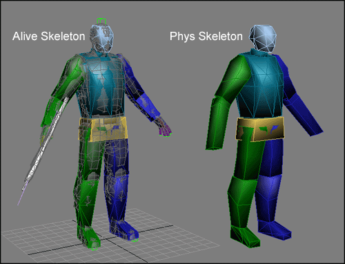
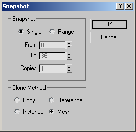
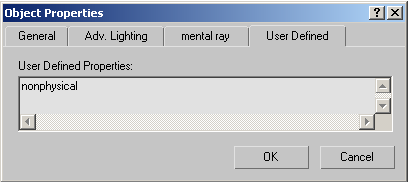
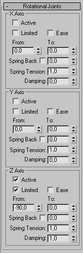
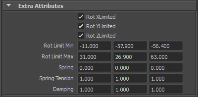
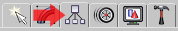
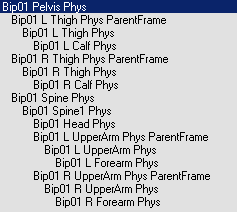
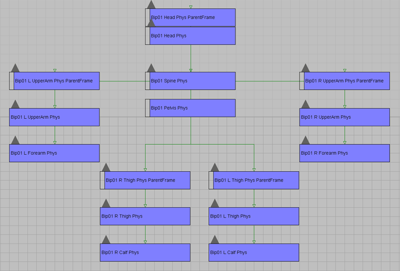

Overview
Sections
This section covers how to create a the proper physics setup for various DCC tools, this includes the Main, Ragdoll and phys mesh skeletons for each.
In order for the bodies of characters to become physicalized upon death, there is a certain setup required to add additional information into the files. There are two main skeletons, one for the main character, and one for the dead or ragdoll character. Both will likely have very similar setups with only a few variations.

Here you see the main and/or dead skeleton to the left, the one on the right is the Phys Skeleton which has the physics properties.
Before You Begin
Before you read further, be sure that you downloaded the compressed file at the top of DCC Setup (animated) for reference.
The Main Skeleton
The bones of the main skeleton should have meshes that loosely follow the shape of the character parts assigned to them because this skeleton will be used for hit detection and mass distribution in the dead/ragdoll body. These meshes should be relatively simple and non-degenerate (closed, without degenerate triangles). When crafting the main skeleton, think about how it will work in game for hit detection. You want it to be very low resolution, but at the same time, conform to the body. You do not want a player to be able to exploit a bad mesh by shooting near the character and hitting them, and you also don't want them to shoot the character and have it not register as a hit.
Do not scale your bones before binding the skeleton to the mesh. All bones in the main Skeleton should be non-scaled, or their scale should be reset and they should be rebound to the mesh with "zeroed-out" scale values ( in 3ds Max: (100,100,100) percent or Maya: (1.0,1.0,1.0) ).
The Dead Body/ Ragdoll Skeleton
The Dead Body skeleton is what the Main skeleton swaps to when it is inflicted with enough damage. It can be a more simplified version and often utilizes the use of capsules on limb joints for a more accurate simulation. It features a similar phys mesh for joint limits and spring attributes as the Main Skeleton. For the most part the Dead Body skeleton will be quite similar to the Main Skeleton and the changes will only fine tune the ragdoll simulation.
The dead body skeleton serves two main purposes:
- The bones act as switches. A Phys bone being present, acts as a switch, activating physicalization of the corresponding bone in the main skeleton. It does not matter where you put this second skeleton, in the example above, it is to the right of the active skeleton.
- The IK limits and dampening used in the Phys mesh will be read and used in rag doll physics to limit and dampen the movement of any given joint.

Saving the Dead Body Skeleton
For characters, the .chr file for LOD0 (main LOD) should contain physics for Main Skeleton (that is used for hit detection and bullet impact swaying animation), and a .chr for LOD1 should contain Dead Body or Phys Skeleton along with the Main Skeleton and the lower resolution mesh. The naming convention for the files is as follows, a character with the name 'Squad_Baseuniform.cgf' and an associated character file 'Squad_Baseuniform.chr' would have it's 'phys' skeleton saved with it's lower resolution version in the file 'Squad_Baseuniform_LOD1.chr'.
Non-Biped Characters
Characters that are not rigged with the biped setup do not necessarily need a 'Phys' Skeleton unless you intend on using ragdoll, then a phys skeleton needs to be with LOD1. It is possible to export IK limits from the Main Skeleton in non-biped characters. (There is a problem with how 3ds Max reads biped characters, and because of this, there is a need to create the 'Phys' Skeleton) In non-biped characters when you want a bone to not be physicalized, you should put the word 'nonphysical' in it's user-defined properties.

User Defined Properties
As you see in the image above, you can enter information about the object in the Object Properties dialog. 'Nonphysical' is just one example of this. The entire list of options is as follows:
- nonphysical
- sphere
- box
- capsule
- cylinder
When a geometry type is listed in the User Defined Properties, the current max geometry is replaced with the named primitive. The shape is created around the general bounding box of the geometry and uses the original pivot point to attempt to rotate the primitive to match the geometry as best as possible. This is a great tool for troubleshooting, but is far from perfect for characters as you cannot see the volume in 3ds Max, and must load it into Sandbox.
For more information on user defined properties please refer to the UDP Settings page.
Phys Skeletons
If a bone is designed to be fully controlled by physics, it (or its phys alias) should contain the word "physical" in its user-defined properties. In this case spring is applied as a force to a bone. Otherwise spring tension is treated like a hint of what acceleration character muscles should achieve at this joint (there are two simulation modes for this parameter and they can be dynamically switched during the game).
Creating the Phys Skeleton
You can create a Phys skeleton by creating a 'snapshot' or duplicate of the original skeleton depending on the software being used. The purpose is to create a duplicate skeleton that preserves the IK and parenting attributes. The bones in the 'phys' skeleton will need to be renamed. For example: you have 'Bip01 Head', then corresponding head in the 'phys' or dead body skeleton is then selected and renamed to 'Bip01 Head Phys'. The engine sees this object with this naming convention and switches on rag doll physics for the 'Bip01 Head' upon the death of the character.
Editing the Phys Skeleton
Not all bones from the Main Skeleton need to be physicalized in the 'Phys' Skeleton. You may want to remove some bones from the new 'Phys' Skeleton you have made. In many cases you will need to. (for instance: multiple bones in the lower arm (radius-ulna) used for pronation and supination) You can remove this unwanted bone from the 'Phys' hierarchy, by deleting it or renaming it. The geometry of it's closest physicalized parent in the Main Skeleton should be modified to encompass this missing bone in the 'Phys' Skeletal hierarchy. In the above pictured squad example, you can see that the chest has been modified to be one piece. In the main mesh it is really 3 or 4 pieces (you are unable to see them because the lowest one was modified to encompass them all.) Those three extra vertebrae bones are not in the 'Phys' Skeleton, so the main skeleton (base vertebrae) was modified to cover the entire area of the chest. When creating and editing the 'Phys' Skeleton, here are some things to keep in mind:
- The bones will have their shapes and masses taken into account, so the skeleton should be physically valid in order to behave valid.
- Heavy-light-heavy patterns in bone structure should be avoided in the 'Phys' skeleton. A typical example from biped is a spine-neck-clavicle-upper arm connection with heavy spine, light neck and clavicle, and a relatively heavy upper arm. For dead bodies it's recommended to exclude neck (not necessarily neck1, 2, though) and the clavicles from the 'Phys' Skeleton.
- Avoid using joints with all 3 axis locked whenever possible, because they slow down the simulation without doing anything useful.
Example of the physics attributes sections for Maya and 3ds Max:
 
Stiffness and Spring Tension
Stiffness of an angular spring at a joint can be adjusted via the "Spring Tension" parameter. A value of 1 means acceleration of 1 radian/second2 (1 radian = 57°). Damping should also be set to some reasonable value (1.0 corresponds to fully dumped oscillations for an isolated joint, 1.0 is also the recommended value).
Dampening
The 'dampening' value in the IK Limit options will effect how loose the joint will be in the rag doll simulation of the dead body. Most times you will want the dampening value set at 1,0.
IK, Rotation, Dampening, and ParentFrames
Now that you have created a 'phys' skeleton, it is time to set up how it will react when simulated. There is a way of passing bone limit information along to the physics engine. To do this, set 'IK Limits' in 3ds Max. These limits are extracted as IK rotational limits from the mesh/node/bone in the dead body or 'phys' skeleton.
For Max Users:
To edit the IK information for a bone in the 'phys' skeleton, select it and click the 'Hierarchy' tab on the right tool pane, as shown here:

Next, click the IK button (pictured below), you will then be able to scroll down to the IK limit information.
At the right you can see the IK limits panel. This is what it looks like for the lower leg (tibia-fibula).
For Maya Users:
To edit the IK information for a bone you need to click "Add Attributes" in the main exporter window, select the jointed skeleton, then open up the Attribute Editor, and then expand Extra Attributes:
In order to limit the movement of the dead skeleton during rag doll physics simulation, you need to set limits on the rotational angles of the bones. The lower leg is set with a rotational angle of 0° to 90°. 0° is the default. The default or 'preferred angle' of all the bones in the 'Phys' skeleton should be 0°.
It is also important that the IK Y angle limits lie in (-90°, 90°) range, and do not come too close to those extremes.
ParentFrames
If the joint needs to rotate beyond the (-90°, 90°) IK Y limit , an additional parent node for the bone can be created, and IK rotational limits will be relative to it. The node should be named (Main Skeleton bone name) + " Phys ParentFrame". Using the previous example above of a character with a bone named 'Bip01 Head', the parent frame of the phys version ('Bip01 Head Phys') would be: 'Bip01 Head Phys ParentFrame'. The ParentFrame should be inserted into the 'phys' skeletal hierarchy between the child node and it's original physicalized parent. Generally it is advised to use ParentFrames when the coordinate frame changes abruptly from parent to child, even if Y angle limit is within the -90°,90° range. Here is a hierarchical view of parent frames inserted at key joints:

Here is a look in schematic view:

For Maya Users:
The parent frame nodes need to look follow these conventions instead: <boneName>_PhysParentFrame.